데이터셋
데이터셋은 레이어 또는 분석을 위해 필요한 데이터들의 모음입니다. 실제 파일 업로드를 통해 만들어지기도 하며, 사용자가 직접 입력하여 데이터셋을 만들 수도 있습니다. 프로젝트 팀원의 권한에 따라 데이터셋을 생성, 수정 또는 삭제를 할 수 있습니다.
지오메트리 유형 데이터셋의 기본 유형으로, 크게 3가지로 구분되어 있습니다 포인트(점) 데이터, 라인(선) 데이터, 폴리곤(면) 데이터로 구분됩니다.
데이터 필드
데이터셋의 필드는 각각의 정보가 입력되는 최소 단위입니다. 필드마다 입력할 수 있는 데이터 타입은 한가지로 정해져 있으며, 필드는 필수적으로 입력해야 하는 필드와 그렇지 않은 필드로 나뉩니다.
데이터 타입 |
특징 |
|---|---|
문자형 |
문자형 데이터만 입력이 가능합니다. 숫자는 입력이 불가능합니다.
영문 대/소문자, 한글 등
|
숫자형 |
숫자형 데이터만 입력이 가능합니다. 문자는 입력이 불가능합니다.
정수형, 실수형으로 구분
|
선택형 |
미리 입력된 데이터 중 선택합니다.
필드 추가 시, 선택할 데이터를 미리 입력해야 합니다.
|
예/아니오형형 |
예/아니오 의 데이터만 입력이 가능합니다. |
날짜형 |
날짜형 데이터만 입력이 가능합니다.
예 : 2021-08-11
|
메타데이터
데이터셋의 메타데이터는 데이터셋 이름, 공간 타입, 지오메트리 타입, 개수, 용량, 작성일 등 데이터셋에 대한 정보를 담고 있습니다.
메타데이터 |
특징 |
|---|---|
제목 |
데이터셋 제목 |
소개 |
데이터셋에 관한 간략한 설명 |
공개 범위 |
데이터셋의 공개 범위 |
공간 타입 |
데이터셋의 공간 데이터 타입
포인트 / 라인 / 폴리곤
|
지오메트리 타입 |
공간데이터의 지오메트리 타입
포인트(MULTIPOINT)
라인(LINESTRING)
폴리곤 (MULTIPOLYGON)
|
SRID |
메타데이터의 좌표계 |
개수 |
데이터의 개수 |
용량 |
데이터의 용량 |
작성일 |
데이터 생성일 |
갱신일 |
데이터 갱신일 |
중심점 |
지도의 중심점(좌표) |
WGS84 bounds |
지도의 범위(좌상단 좌표, 우하단 좌표) |
데이터셋 만들기
파일로 데이터셋 만들기 프로젝트 메뉴의 데이터셋을 클릭합니다. 내가 가지고 있는 파일 파일 Shape , CSV, 엑셀파일을 선택하여 옵션과 메타데이터를 설정하고 업로드하면 데이터셋이 생성됩니다.
아래는 파일로 데이터셋 만들기에서 업로드 가능한 파일의 형식과 설명입니다.
파일형식 |
확장자 |
설명 |
|---|---|---|
Shape |
zip |
기하학적 위치 및 속성 정보를 저장하기 위한 벡터 데이터 저장 형식
포인트(점), 라인(선), 폴리곤(면) 형식의 모양으로 저장
ZIP으로 압축된 파일 Shape 내부에 아래의 확장자를 가진 필수 파일이 필요(.shp - 지오메트리(기하학적) 지리정보데이터, .shx - 빠르게 데이터를 탐색할 수 있는 데이터 인덱스, .dbf - 속성정보)
.prj는 좌표정보를 확인할 수 있는 텍스트 형식의 파일로 포함되어 있지 않을 경우 EPSG:3857이 기본 좌표계로 선택됨
필수 파일 확장자 외 sbn, sbx, fbn, fbx, ain, aih, ixs, mxs, atx, shp.xml, cpg, qix 파일도 존재할 수 있음
최대 10MB까지 업로드 가능
|
CSV |
csv, txt |
컴마로 구분된 텍스트 데이터 및 텍스트 파일
컴마(,) 외 콜론(:),세미콜론 (;)도 구분 문자로 사용 가능
최대 3MB까지 업로드 가능
|
스프레드시트 |
xlsx, xls |
행과 열을 가진 스프레드시트 엑셀 파일 형식
xls : Excel 97-2004 통합 문서
xlsx : Excel 통합 문서
최대 3MB까지 업로드 가능
|
파일로 데이터셋 만들기는 다음과 같은 순서로 진행됩니다.
중요
파일선택 -> 옵션 설정 -> 메타데이터 설정 -> 업로드
아래의 내용은 파일로 데이터셋을 만드는 방법에 대해 순서대로 설명합니다.
1. 파일선택

데이터셋 화면 오른쪽 상단의 새로운 데이터셋을 클릭합니다.
업로드할 데이터셋 파일을 선택합니다. (선택가능한 파일의 확장자는 Shapefile(ZIP), txt, csv, xls, xlsx입니다.)
선택한 파일명과 함께 파일의 인코딩 형식을 선택할 수 있습니다.

2-1 옵션 설정 - Shape

아래는 파일을 Shape 선택하면 설정할 수 있는 옵션에 대한 설명입니다. (옵션) 표시된 항목은 체크박스 선택 후 값을 변경할 수 있습니다. 값을 입력하지 않거나 체크박스 해제시 기본값이 적용됩니다.
인코딩 (옵션) 선택란 에서 파일에 맞는 인코딩을 선택합니다 기본값은 x-windows-949 입니다.
원본 좌표계 (옵션) 선택란 에서 데이터의 원본 좌표계를 선택합니다 기본값은 ‘EPSG:3857’ 입니다.
대상 좌표계 (옵션) 선택란 에서 좌표변환에 사용할 좌표계를 선택합니다 기본값은 ‘EPSG:3857’ 입니다.
옵션 설정이 완료되면 다음을 클릭합니다.
2-2 옵션 설정 - CSV
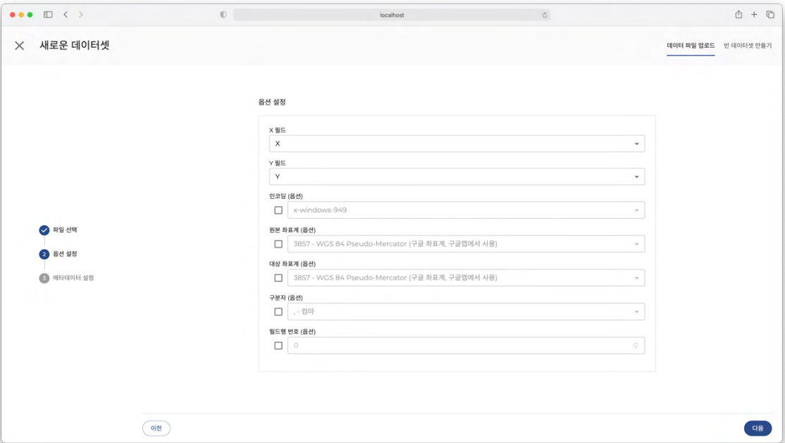아래는 파일을 CSV 선택하면 설정할 수 있는 옵션에 대한 설명입니다. X필드 Y필드는 좌표 필드 선택 옵션으로 정확히 입력하지 않으면 파일이 정상적으로 업로드 되지 않습니다. (옵션) 표시된 항목은 체크 박스 선택 후 값을 변경할 수 있습니다. 값을 입력하지 않거나 체크박스 해제시 기본값으로 적용됩니다.
X 필드 선택란에서 데이터의 X좌표 필드 값을 선택합니다. 기본값은 X로 데이터에 필드가 있을 경우 자동으로 선택됩니다.
‘Y 필드 선택란에서 데이터의 Y좌표 필드 값을 선택합니다. 기본값은 Y로 데이터에 필드가 있을 경우 자동으로 선택됩니다.
인코딩(옵션) 선택란에서 파일에 맞는 인코딩을 선택합니다. 기본값은 windows-949입니다.
원본 좌표계(옵션) 선택란에서 데이터의 원본 좌표계를 선택합니다. 기본값은 3857 입니다.
대상 좌표계(옵션) 선택란에서 좌표변환에 사용할 좌표계를 선택합니다. 기본값은 3857 입니다.
구분자(옵션) 선택란에서 필드를 구분할 구분자를 선택합니다. 기본값은 컴마 입니다.
필드행 번호(옵션) 선택란에서 필드명으로 사용할 행을 선택합니다. 선택된 행번호가 필드명이 그 이후 행번호부터 데이터로 적용됩니다. 첫 번째 행번호는 0부터 시작됩니다 기본값은 0입니다.
2-3 옵션 설정 - 스프레드시트
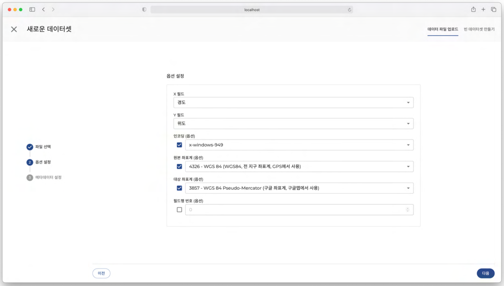아래는 스프레드시트(엑셀) 파일을 선택하면 설정할 수 있는 옵션에 대한 설명입니다 X필드, Y필드 좌표 필드 선택 옵션으로 정확히 입력하지 않으면 파일이 정상적으로 업로드 되지 않습니다. (옵션) 표시된 항목은 체크 박스 선택 후 값을 변경할 수 있습니다. 값을 입력하지 않거나 체크박스 해제시 기본값으로 적용됩니다.
X 필드 선택란에서 데이터의 X좌표 필드 값을 선택합니다. 기본값은 X로 데이터에 X필드가 있을경우 자동으로 선택됩니다.
Y 필드 선택란에서 데이터의 Y좌표 필드 값을 선택합니다. 기본값은 Y로 데이터에 Y필드가 있을 경우 자동으로 선택됩니다.
인코딩(옵션) 선택란에서 파일에 맞는 인코딩을 선택합니다. 기본값은 x-windows-949입니다.
원본 좌표계 (옵션) 선택란에서 데이터의 원본 좌표계를 선택합니다. 기본값은 3857 입니다.
대상 좌표계 (옵션) 선택란에서 좌표변환에 사용할 좌표계를 선택합니다. 기본값은 3857 입니다.
필드행 번호(옵션) 선택란에서 필드명으로 사용할 행을 선택합니다. 선택된 행번호가 필드명이고 그 이후 행번호부터 데이터로 적용됩니다. 첫 번째 행번호는 0부터 시작됩니다. 기본값은 0입니다.
3. 메타데이터 설정
데이터셋을 소개할 수 있는 제목과 간략한 소개글, 그리고 공개범위를 선택하고 설정합니다.
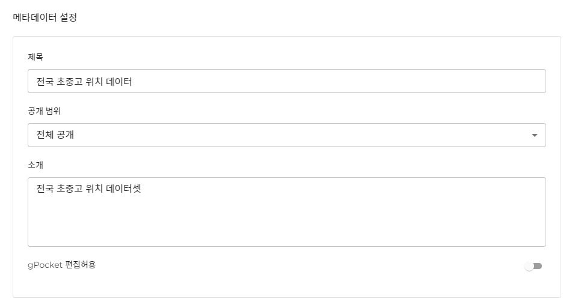제목 필드 입력란에는 데이터셋의 제목을 입력합니다.
공개 범위 선택란에는 데이터셋의 공개 범위를 선택합니다. (공개 범위의 옵션에 대해서는 아래 표를 참조)
소개 필드 입력란에는 데이터셋에 대한 소개를 입력합니다.
gPocket 편집허용 은 이 데이터셋을 gPocket 애플리케이션에서 편집할 수 있도록 설정하는 기능입니다. 기본값은 gPocket에서 편집 비허용 입니다.
업로드 를 클릭하여 데이터셋을 업로드 합니다.
데이터셋의 공개범위의 종류는 아래와 같습니다.
옵션명 |
특징 |
|---|---|
전체 공개 |
모든 피노지오 사용자가 데이터셋에 접근 |
팀 사용자에게 공개 |
프로젝트 팀 사용자만 데이터셋에 접근 가능 |
비공개 |
데이터셋 생성자만 데이터셋에 접근 가능 |
4. 업로드된 데이터셋 확인
파일 업로드가 완료되면 새로 만들어진 데이터셋 페이지로 이동됩니다. 지도에 데이터 위치와 입력한 메타데이터, 필드 정보를 확인하여 데이터가 잘 업로드 되었는지 확인합니다.

지도위에서 도형을 클릭하면 선택한 도형의 속성정보를 팝업으로 확인할 수 있습니다.
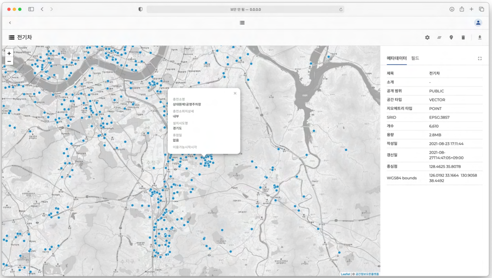업로드된 데이터셋의 오류 사항
데이터 업로드시 잘못된 좌표필드(X필드, Y필드)를 선택하거나 데이터와 다른 좌표계를 선택했을 경우 데이터셋이 정상적으로 생성되지 않을 수 있습니다. 아래는 좌표 필드, 좌표계 설정 또는 데이터가 잘못되었을 때 발생되는 오류 사항에 대한 예시입니다.
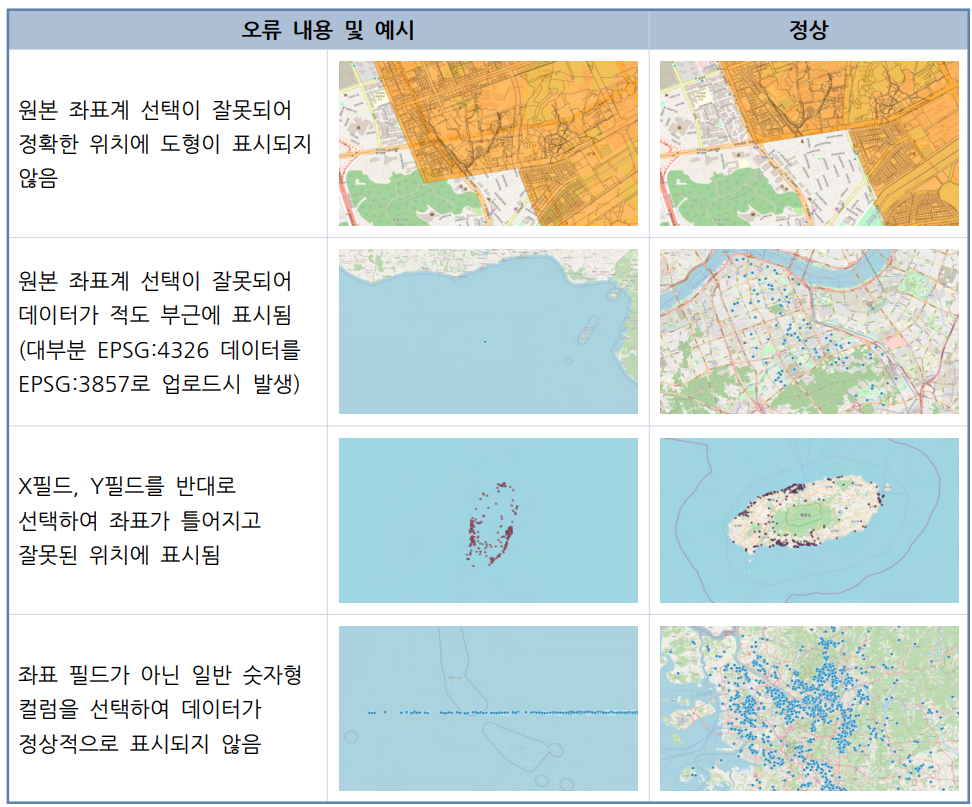팁
Shape 데이터셋을 업로드 해볼 수 있는 샘플(Sample) 데이터셋을 다운로드하려면 아래의 링크를 클릭해주세요.
아래의 옵션으로 설정 후 업로드 해주세요.
원본 : UTF-8 / 인코딩(옵션) : UTF-8 / 원본 좌표계(옵션) : 4326 / 대상 좌표계(옵션) : 자유롭게 선택
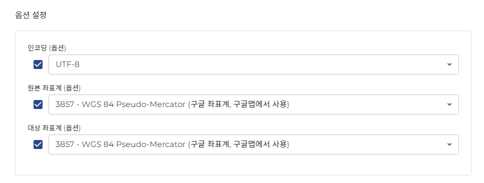 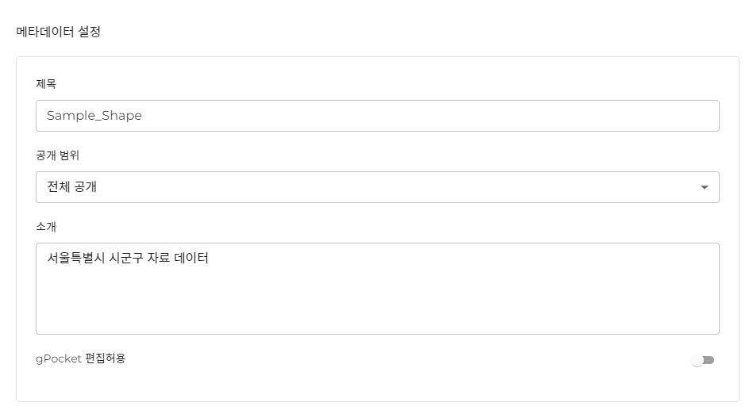 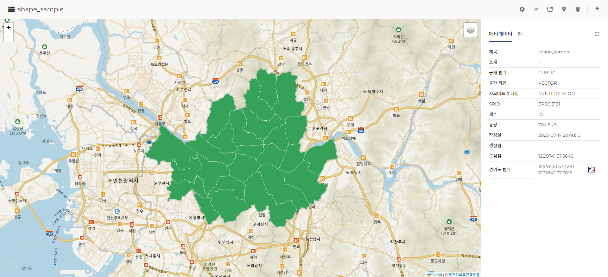팁
CSV 데이터셋을 업로드 해볼 수 있는 샘플(Sample) 데이터셋을 다운로드하려면 아래의 링크를 클릭해주세요.
아래의 옵션으로 설정 후 업로드 해주세요.
원본 : UTF-8 / x 필드 : x_coord / y필드 : y_coord / 인코딩(옵션) : UTF-8 / 원본 좌표계(옵션) : 3857 / 대상 좌표계(옵션) : 자유롭게 선택 / 구분자(옵션) : 컴마 / 필드 행 번호(옵션) : 0
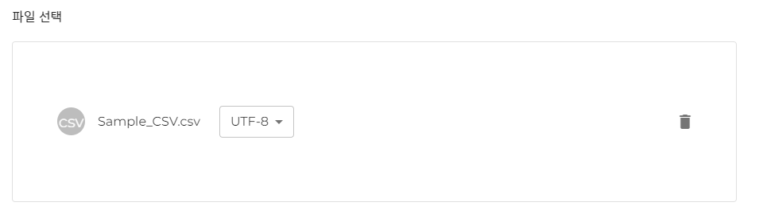 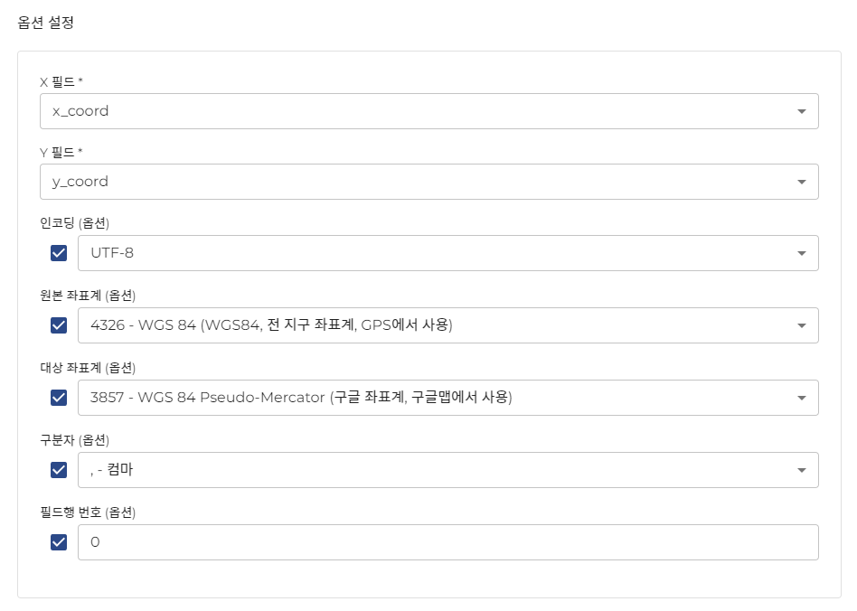 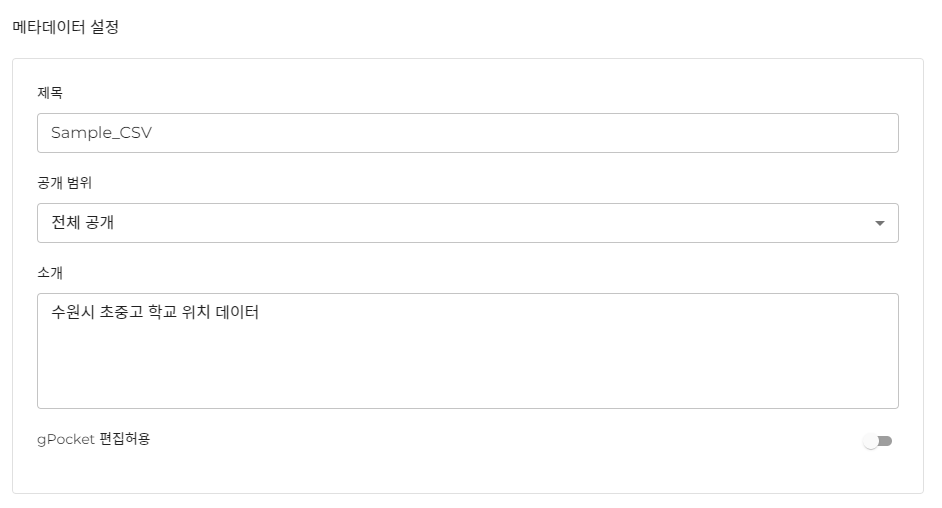 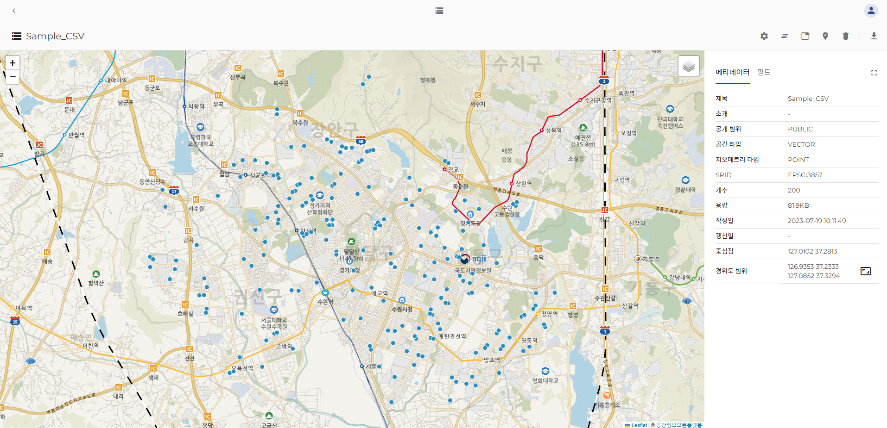팁
스프레드시트 데이터셋을 업로드 해볼 수 있는 샘플(Sample) 데이터셋을 다운로드하려면 아래의 링크를 클릭해주세요.
아래의 옵션으로 설정 후 업로드 해주세요.
원본 : UTF-8 / x 필드 : x_coord / y필드 : y_coord / 인코딩(옵션) : UTF-8 / 원본 좌표계(옵션) : 3857 / 대상 좌표계(옵션) : 자유롭게 선택 / 구분자(옵션) : 컴마 / 필드 행 번호(옵션) : 0
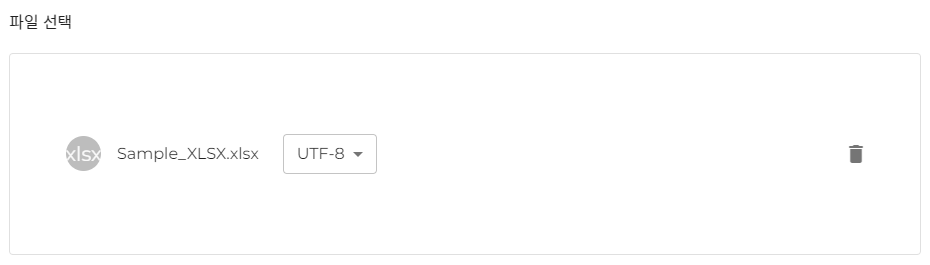 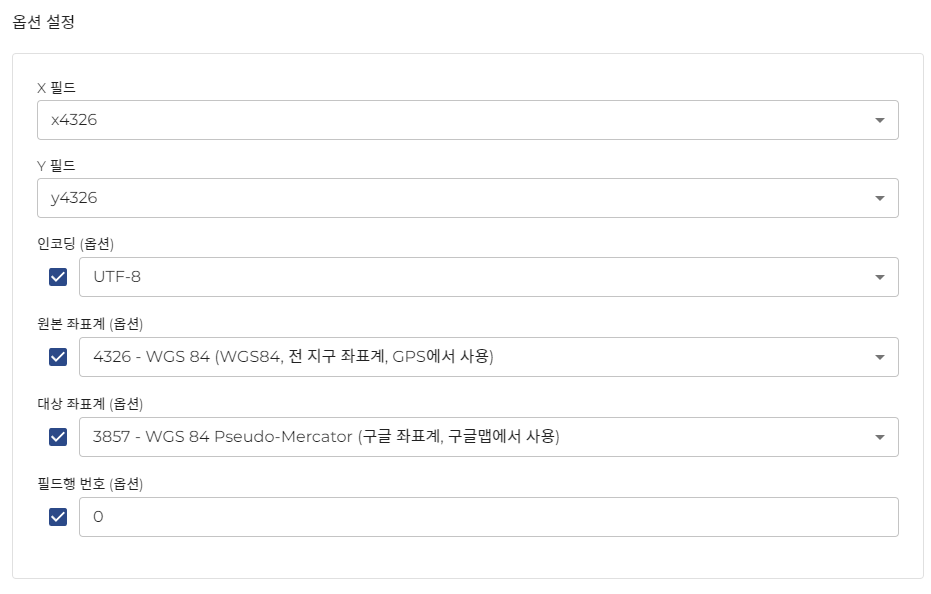 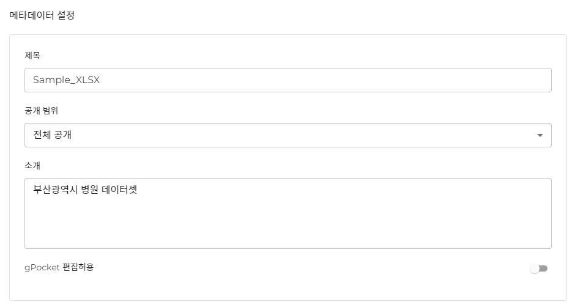 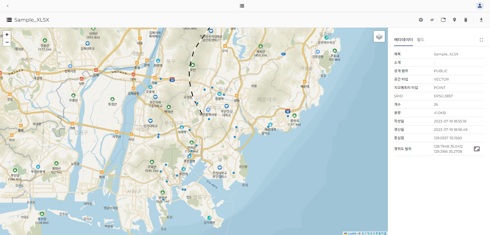비어있는 데이터셋 만들기
프로젝트 메뉴의 데이터셋을 클릭합니다. 우측 상단의 빈 데이터셋 만들기를 클릭하여 파일을 업로드 하지 않고서도 데이터셋을 만들 수 있습니다.
중요
공간데이터 정보 설정 -> 필드추가 -> 메타데이터 설정 -> 업로드
1. 공간데이터 정보 설정
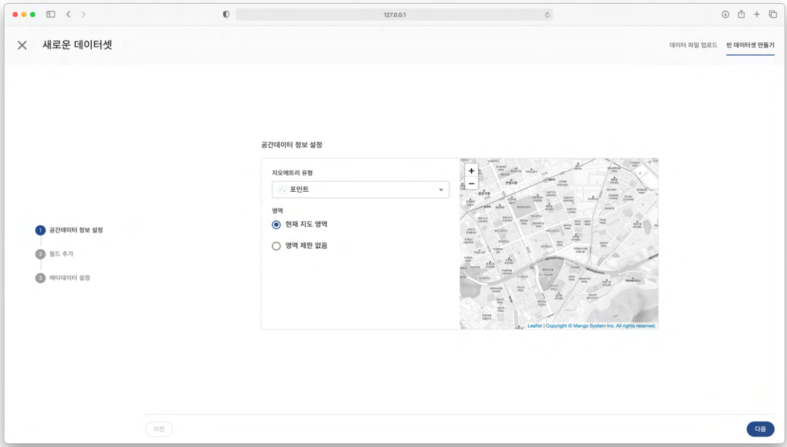데이터셋 화면 오른쪽 상단의 새로운 데이터셋 을 클릭합니다.
새로운 데이터셋 화면의 오른쪽 상단의 빈 데이터셋 만들기 를 클릭합니다.
지오메트리 유형 선택란에서 새로 만들 데이터셋의 지오메트리 유형을 선택합니다. (지오메트리 유형은 포인트, 라인, 폴리곤이 있습니다.)
영역 선택란에서 데이터셋의 영역을 선택합니다.( 현재 지도 영역은 우측의 지도 영역만큼을 데이터셋으로 사용하는 옵션이며, 영역 제한 없음을 선택하면 데이터셋의 영역을 제한하지 않습니다.)
2. 필드 추가
데이터셋의 필드를 추가하는 기능입니다. 파일을 업로드하여 생성하는 데이터셋은 파일에서 필드를 가져와 설정하지만, 빈 데이터셋을 만들게 되면 사용자가 필드를 직접 추가해야 합니다.
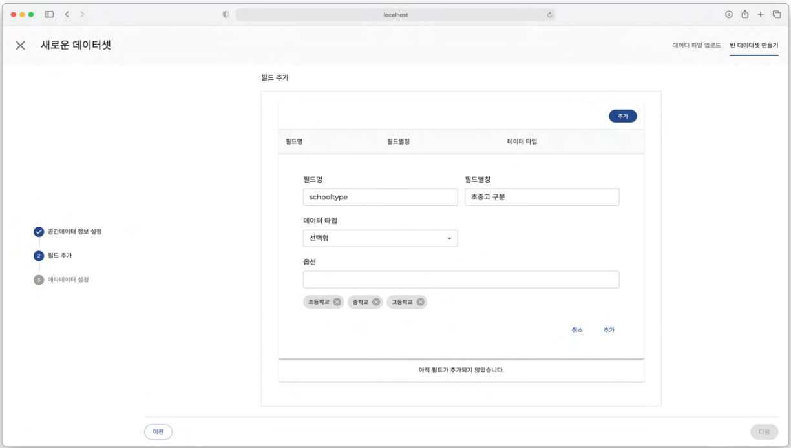필드 추가화면 우측 상단의 추가 를 클릭합니다.
필드명 입력란에 필드 이름을 입력합니다.
필드별칭 입력란에 필드의 별칭을 입력합니다.
데이터 타입 선택란에서 필드의 데이터 타입을 선택합니다. (데이터 타입에 따른 입력방법은 아래에서 설명)
추가 를 클릭하여 입력한 필드를 추가합니다.
원하는 필드가 모두 추가되었으면, 다음 을 클릭하여 메타데이터 설정화면으로 넘어갑니다.
다음은 필드 추가시 입력하는 항목의 종류와 특징에 대한 설명입니다.
입력항목 |
설명 |
|---|---|
필드명 |
최소 4 , 10 글자 이상 글자 이하
시작단어를 숫자로 입력 불가능
대문자 입력 불가능
특수문자는 밑줄문자(_)만 허용
|
필드별칭 |
20글자 이하
한글, 영문, 숫자, 공백 사용 가능
|
데이터 타입 |
1) 문자형
- 문자형 값을 입력 받을 수 있도록 설정
2) 숫자형
- 숫자형 값을 입력 받을 수 있도록 설정
- 정수형(INTEGER), 실수형(DOUBLE) 값 선택 가능
(하단 예시 참조)
3) 선택형
- 사용자가 정의한 값을 입력받을 수 있도록 설정
- 옵션은 최대 10개 까지 추가 가능
- 옵션 1의 문자 열 최대 길이는 20자리
- 옵션 입력 후 엔터키를 입력하면 추가할 수 있음
- 하단에 추가된 옵션을 확인할 수 있고 X 아이콘을 클릭하면 옵션이 삭제 됨
(하단 예시 참조)
4) 예/아니오형
- 참/거짓 값을 입력 받을 수 있도록 설정
5) 날짜형
- 날짜형식의 사용자 입력받고자 하는 값을 정할 수 있음
|
{kind=link}
{kind=link}
이후 메타데이터 설정 과 업로드 절차는 이전과 파일로 데이터셋 생성하기 절차와 동일 합니다.
데이터셋 검색하기
데이터셋은 한 사용자만 만드는 것이 아니라, 프로젝트에 참여중이며 데이터셋을 생성할 수 있는 권한이 있는 팀원 모두가 만들 수 있습니다. 많은 데이터 셋이 존재할 경우 특정 데이터셋을 손쉽게 찾을 수 있는 검색기능이 있습니다.
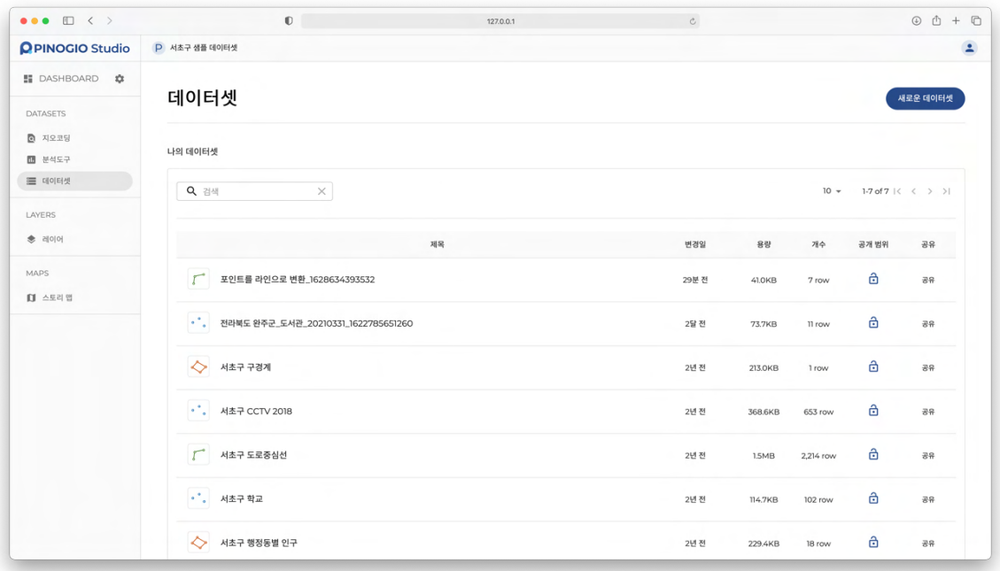데이터셋 목록 상단의 검색창에 검색할 데이터셋 이름을 입력합니다.
엔터키를 입력하여 검색창에 입력된 데이터셋명을 포함한 데이터셋을 검색합니다.
데이터셋 공유하기
생성되어있는 데이터셋을 공유하는 기능입니다. 데이터 셋 공유를 통해 다른 사용자가 데이터셋에 접근할 수 있습니다. 다음의 내용은 데이터셋을 공유하는 방법에 대해 설명합니다.
데이터셋 공유
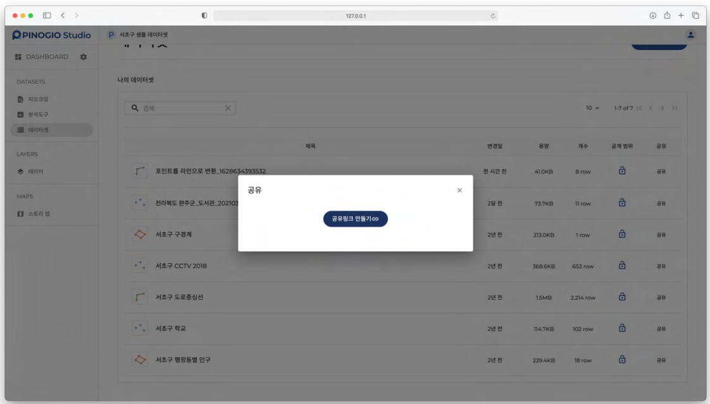데이터셋 목록 오른쪽의 공유 를 클릭합니다.
새로 생성된 데이터셋의 경우 기본적으로 공유하지 않음으로 설정되어 있습니다.
공유링크 만들기 를 클릭하여 데이터셋 공유를 위한 링크를 생성합니다.
데이터셋 공유권한 설정
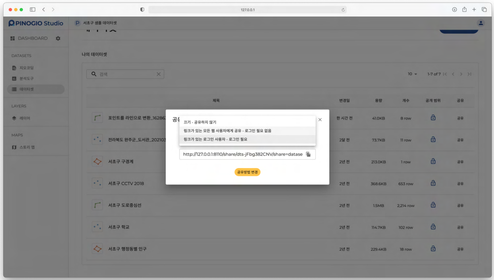1. 공유링크 만들기가 완료되면 링크가 있는 모든 웹 사용자에게 공유 - 로그인 필요 없음 옵션이 기본으로 설정이 됩니다. 2. 공유옵션의 종류와 설명에 대해서는 아래 표 내용을 참고합니다. 3. 아래에 표시된 공유링크를 확인하고, 복사아이콘 을 클릭하여 클립보드에 복사할 수 있습니다. 4. 끄기 - 공유하지 않기 옵션이 선택될 경우 공유링크 제거 가 활성화 되고 클릭 시 공유를 제거할수 있습니다. 5. 링크가 있는 모든 웹 사용자에게 공유 또는 링크가 있는 로그인 사용자 옵션 이 선택될 경우 공유방법 변경을 클릭할 수 있습니다. 6. 현재 선택된 옵션을 변경하지 않을 경우 클릭할 수 없도록 비활성화 상태가 유지됩니다
공유옵션 |
특징 |
|---|---|
끄기 - 공유하지 않기 |
현재 데이터셋을 공유하지 않습니다. |
링크가 있는 모든 웹 사용자에게 공유 - 로그인 필요 없음 |
피노지오 로그인을 하지 않아도 데이터셋 접근이 가능합니다. |
링크가 있는 로그인 사용자 – 로그인 필요 |
피노지오 로그인을 해야 데이터셋 접근이 가능합니다 |
데이터셋 정보보기 및 관리하기
생성된 데이터셋의 정보를 조회하는 기능입니다. 데이터 셋의 데이터가 지도에서는 어떻게 표현되는지, 메타데이터 정보는 어떤지, 데이터 필드는 어떻게 이루어져있는지 확인할 수 있습니다.
데이터셋 정보보기
데이터셋 목록에서 원하는 데이터셋을 클릭하면 데이터셋의 정보 페이지로 이동할 수 있습니다.
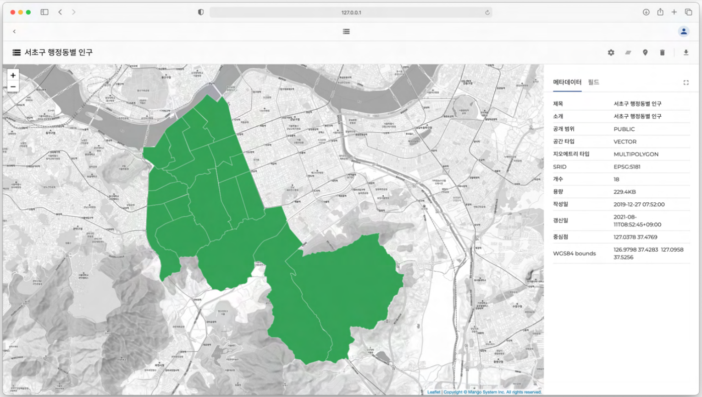메타데이터 및 필드 정보
데이터셋 정보 페이지에서 메타데이터를 클릭하면 데이터셋의 메타데이터 정보를, 필드를 클릭하면 데이터셋의 필드 정보를 조회할 수 있습니다.
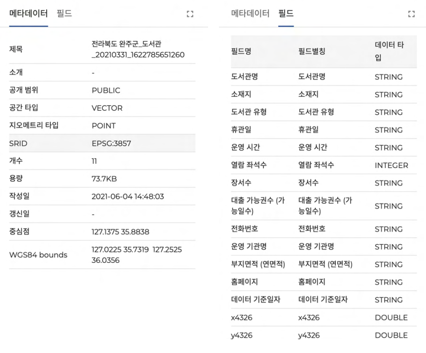설정 변경하기
데이터셋 정보 페이지에서 우측 상단의 톱니바퀴(메타데이터설정) 를 클릭하여 메타데이터 내용을 수정할 수 있습니다
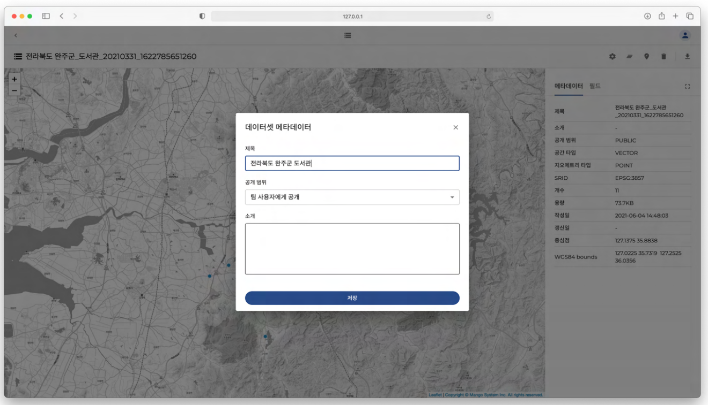필드 관리하기
데이터셋 정보 페이지에서 우측 상단의 필드 수정을 클릭하여 메타데이터의 필드를 추가하거나 수정, 삭제할 수 있습니다.
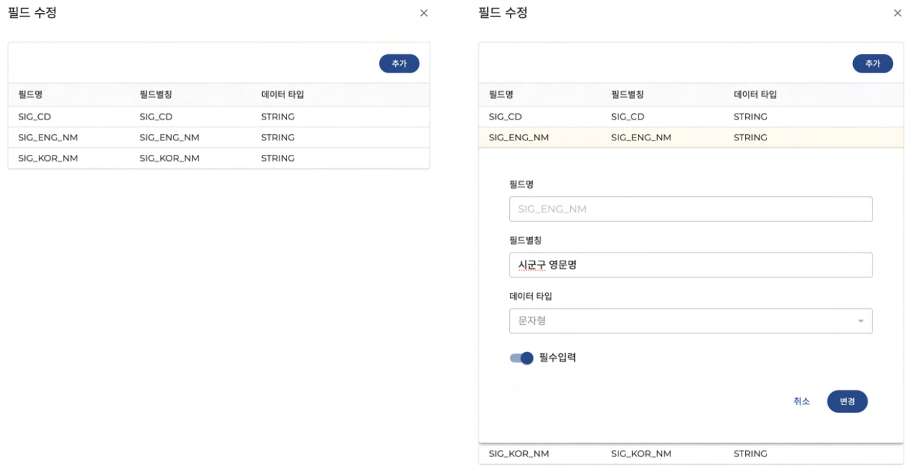필드를 수정하려면 수정할 필드 오른쪽의 연필모양아이콘을 클릭합니다.
필드를 삭제하려면 수정아이콘 옆의 삭제아이콘을 클릭합니다.
오른쪽 그림처럼 필드 내용을 수정할 수 있습니다. (필드명과 데이터 타입은 수정이 불가능합니다.)
변경을 클릭하여 수정된 내용을 저장합니다.
새로운 필드를 추가할 수 있습니다. 필드 추가 방법은 새로운 데이터셋 만들기의 비어있는 데이터셋 필드 추가 내용과 같습니다
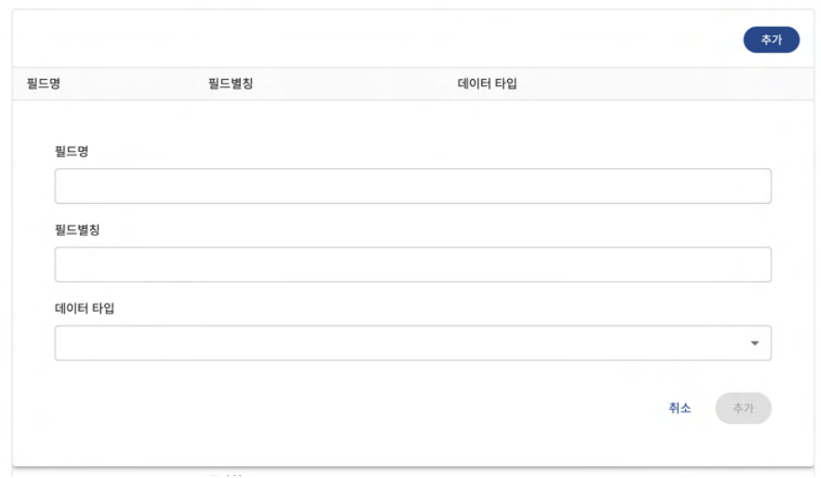데이터셋 삭제하기
생성되어있는 데이터셋이 불필요할 경우에는 데이터셋을 삭제해야 합니다.
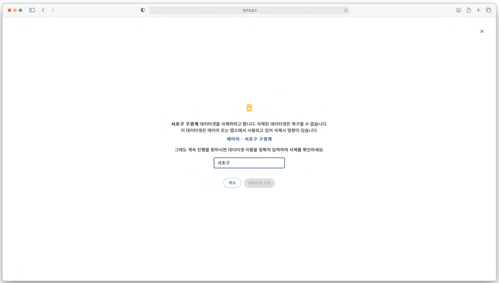데이터셋 정보 페이지에서 우측 상단의 데이터셋 삭제를 클릭합니다.
데이터셋 삭제페이지에서 삭제 확인을 위해 데이터셋 이름을 정확히 입력합니다.
데이터셋 삭제버튼이 활성화되면, 데이터셋 삭제를 클릭하여 데이터셋을 삭제합니다.
데이터셋 다운로드
피노지오 데이터셋에 업로드되어있는 데이터를 다운로드 해야 할 때도 있습니다. 피노지오에서는 데이터셋 다운로드 기능을 제공합니다. 데이터셋 정보 페이지 우측 상단의 다운로드아이콘 을 클릭하면 데이터셋 파일을 다운로드 받을 수 있습니다. 데이터셋 파일은 Shapefile(zip)파일로 제공됩니다.
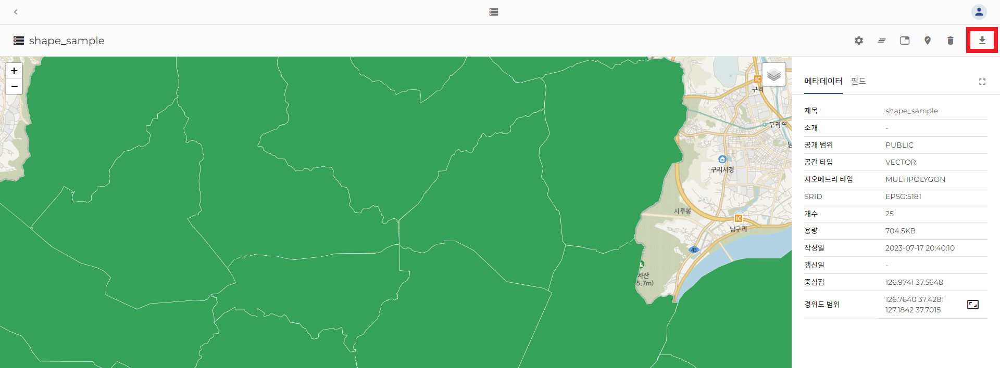데이터셋 편집하기
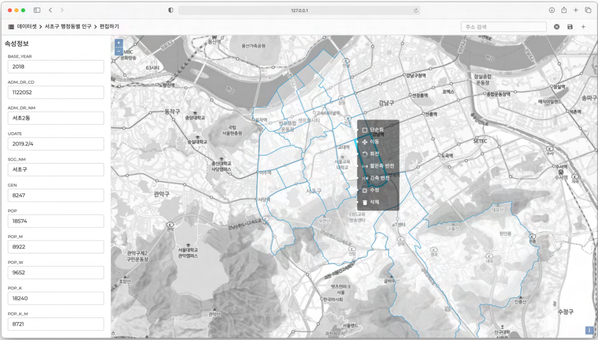주소검색
주소를 검색하여 지도의 위치를 이동하는 기능입니다. 다음과 같은 과정으로 진행합니다.
오른쪽 상단에 위치한 주소 검색 창에 정확한 도로명 주소를 입력합니다.
입력이 완료되면 엔터키를 눌러 주소를 검색합니다.
속성정보 변경하기
선택한 피처(데이터)의 속성정보를 수정하는 기능입니다. 각 속성정보의 타입은 필드의 타입과 동일합니다. 다음과 같은 과정으로 진행합니다.
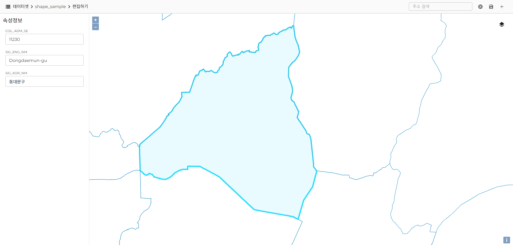속성을 편집할 피처(데이터)를 지도상에서 마우스 왼쪽을 클릭하여 선택합니다.
왼쪽 화면에 나타난 피처(데이터)의 정보를 수정합니다.
상단의 저장 아이콘(디스켓 아이콘) 을 클릭하여 저장합니다.
도형 편집하기
도형을 편집하는 기능입니다. PINOGIO에서 도형을 편집하는 기능은 데이터의 도형 타입에 따라 달라집니다. 아래는 PINOGIO에서 제공하는 도형 타입별 편집 기능 목록입니다.
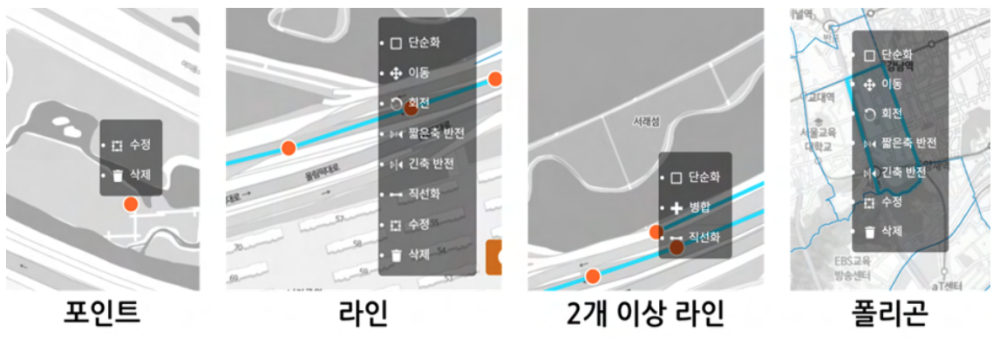1. 포인트 데이터셋 도형 편집하기
선택한 포인트 타입의 피처(데이터)를 편집합니다. 편집하기 위해서는 지도가 일정 레벨 이상 확대되어야 합니다. 다음과 같은 과정으로 진행합니다.
지도를 오른쪽 상단의 ‘편집하려면 확대하세요’ 메시지가 없어질 때까지 확대 합니다.
편집할 피처(데이터)를 마우스 오른쪽을 클릭합니다.
편집할 종류를 클릭하고 편집을 진행합니다.
포인트 데이터셋 도형 편집기능의 종류는 아래와 같습니다.
수정 : 피처(데이터)의 도형의 노드 또는 라인을 드래그하여 수정합니다. 수정기능에는 스냅 기능을 지원합니다.
삭제 : 피처(데이터)를 삭제합니다.
2. 라인 데이터셋 도형 편집하기
선택한 라인 타입의 피처(데이터) 를 편집합니다. 편집하기 위해서는 지도가 일정 레벨 이상 확대되어야 합니다. 다음과 같은 과정으로 진행합니다.
지도를 오른쪽 상단의 ‘편집하려면 확대하세요’ 메시지가 없어질 때까지 확대 합니다.
편집할 피처(데이터)를 마우스 오른쪽을 클릭합니다.
편집할 종류를 클릭하고 편집을 진행합니다.
라인 데이터셋 도형 편집기능의 종류는 아래와 같습니다.
단순화 : 라인 위 노드의 숫자를 줄여 라인을 단순화 합니다.
이동 : 피처(데이터)를 원하는 지점으로 드래그하여 이동합니다.
회전 : 피처(데이터)를 드래그하여 회전합니다.
짧은축 반전 : 피처(데이터)의 짧은 축을 기준으로 도형을 반전합니다.
긴축 반전 : 피처(데이터)의 긴 축을 기준으로 도형을 반전합니다.
직선화 : 시작점과 끝을 기준으로 피처(데이터)를 직선화합니다.
병합 : 두 개 이상의 연결되어 있는 피처(데이터)를 선택한 후 하나의 라인으로 병합합니다. 이 때 두 개의 피처(데이터)는 끝점이 연결되어 있어야 합니다.
수정 : 피처(데이터)의 도형의 노드 또는 라인을 드래그하여 수정합니다. 수정기능에는 스냅 기능을 지원합니다.
삭제 : 피처(데이터)를 삭제합니다.
3. 폴리곤 데이터셋 도형 편집하기
선택한 라인 타입의 피처(데이터) 를 편집합니다. 편집하기 위해서는 지도가 일정 레벨 이상 확대되어야 합니다. 다음과 같은 과정으로 진행합니다.
지도를 오른쪽 상단의 ‘편집하려면 확대하세요’ 메시지가 없어질 때까지 확대 합니다.
편집할 피처(데이터)를 마우스 오른쪽을 클릭합니다.
편집할 종류를 클릭하고 편집을 진행합니다.
폴리곤 데이터셋 도형 편집기능의 종류는 아래와 같습니다.
단순화 : 폴리곤의 노드의 숫자를 줄여 폴리곤을 단순화 합니다.
이동 : 피처(데이터)를 원하는 지점으로 드래그하여 이동합니다.
회전 : 피처(데이터)를 드래그하여 회전합니다.
짧은축 반전 : 피처(데이터)의 짧은 축을 기준으로 도형을 반전합니다.
긴축 반전 : 피처(데이터)의 긴 축을 기준으로 도형을 반전합니다.
수정 : 피처(데이터)의 도형의 노드 또는 라인을 드래그하여 수정합니다. 수정기능에는 스냅 기능을 지원합니다.
삭제 : 피처(데이터)를 삭제합니다.
편집 취소하기
피처(데이터)를 편집 및 추가한 후 오른쪽 상단의 취소아이콘 을 클릭하여 편집을 취소할 수 있습니다. 편집을 취소하면 저장한 후 또는 처음 상태로 돌아갑니다. 편집을 취소하면 다시 되돌리지 못합니다.
편집 저장하기
피처(데이터)를 편집한 후 오른쪽 상단의 저장아이콘을 클릭하여 편집 내용을 저장합니다.
새로운 도형 추가하기
오른쪽 상단의 더하기아이콘 을 클릭한 후 지도상에 피처(데이터)를를 그려 추가합니다. 그리기 도형의 타입은 데이터셋의 도형 타입에 따라 변경됩니다.